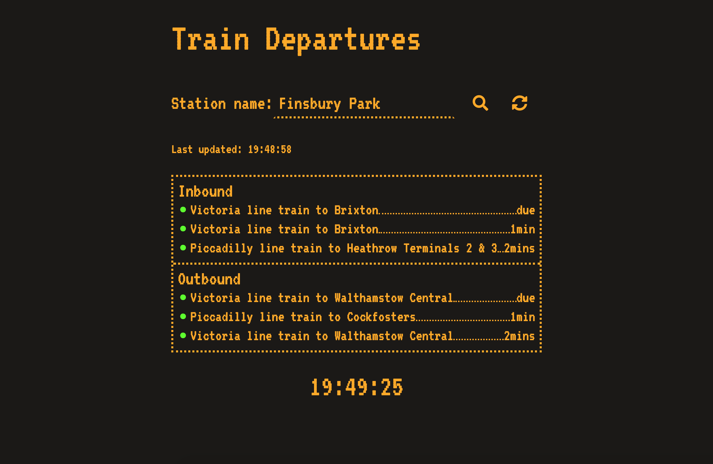
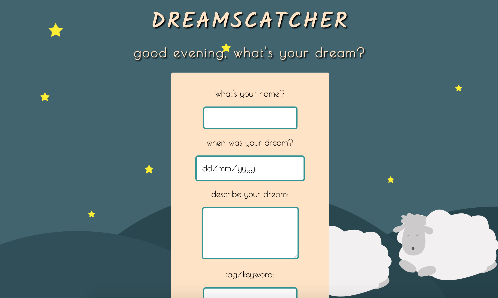
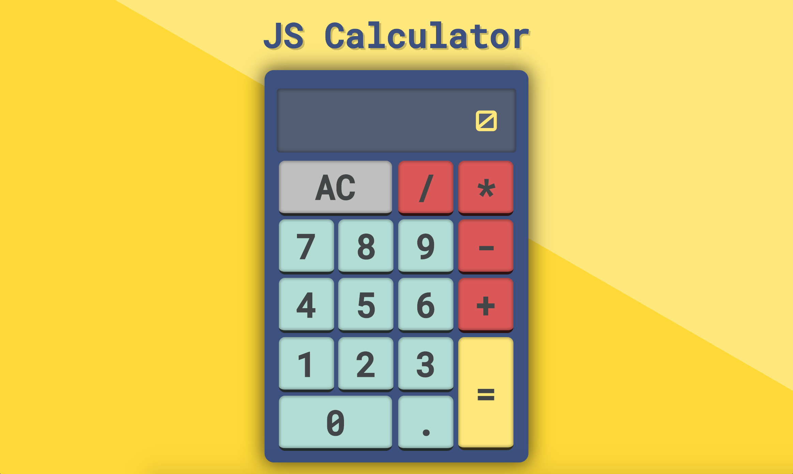

Profile:

I’m a Full Stack JavaScript web developer based in London.
My background is in linguistics and translation, but my interest in coding led me to becoming a self-taught web development enthusiast and then a Founders and Coders student.
My experience studying at Founders and Coders taught me the value of good communication, teamwork and user-first approach. I strive to write clean, readable code and enjoy intuitive and simple design.
Tech Skills:
-
Client Side
- HTML
- CSS
- JavaScript (ES6)
- React
- Sass
- Handlebars.js
- BEM
-
Server Side
- Node.js
- Express
- Heroku
-
Databases
- PostgreSQL
-
Testing
- TDD
- Jest
- Tape
- Supertest
-
Tools & Methodologies
- Git & GitHub
- Travis CI
- Agile
- Pair-programming
- Scrum
- User Research
- User Testing
- Design Thinking
What is Founders and Coders?
Founders and Coders is a tuition free, peer-driven coding bootcamp in London. Over 18-weeks, together with a cohort of 15 other students I learnt new technologies and gained hands-on experience by building 10 projects in Agile teams.

The sixteenth cohort of Founders and Coders
Projects
Dish
Live version: here
Code: here
Dish is a community meal sharing app created for co-workers who want to share homemade lunches. The app allows the users to create and browse available communities and view, post and claim available lunch listings.
Built in a team of four over three weeks as a student project at Founders and Coders.
Built with: JavaScript, PostgreSQL, Handlebars.js, Express, Sass, Jest, Travis CI, Heroku
Train Departures App
Live version: here
Code: here
Responsive web app that allows the user to search for the next departing trains and view status updates from London Underground stations.
Built in a team of four over three days.
Built with: JavaScript, Node.js, HTML, CSS, TfL API, Travis CI, Heroku
Dreamscatcher
Live version: here
Code: here
A dream journal web app that lets user enter their dreams and view a log of past entries.
Built in a team of four over three days.
Built with: JavaScript, CSS, PostgreSQL, Express, Handlebars.js
JS Calculator
Live version: here
Code: here
Vanilla JavaScript calculator.
Built with: JavaScript, HTML, CSS
View all of my projects on myGitHub profile
Contact
- Email: anblaziak@gmail.com
- GitHub: aniablaziak
- Twitter: @aniablaziak